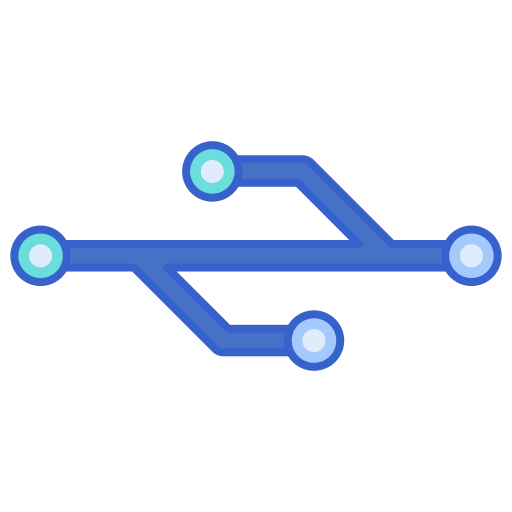
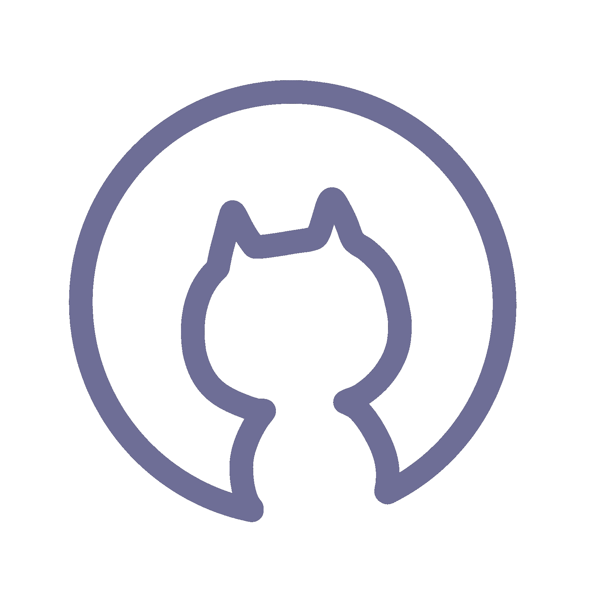

Git veya GitHub' ı yazılım alanında kendinizi geliştirmek istediyseniz,
çeşitli yazılım projeleri hakkında araştırma yaptıysanız veya yazılımla ilgili kavramlara göz attıysanız mutlaka duymuşsunuzdur.
Peki bu kavramların ne olduğu hakkında bilgi almak ister misiniz? O zaman sizlere bu kavramlar hakkında kendi bildiklerimi
aktarmaya çalışacağım. Bu kavramları açıklamak için öncelikle Sürüm Kontrol Sistemi kavramını bilmemiz gerekiyor.
SÜRÜM KONTROL SİSTEMİ NEDİR?

Kısaca bir projede yapılan değişiklikleri, güncellemeleri veya atılan adımların hepsini takip eder ve bu hareketleri kaydeder.
Kaydedilen bu hareketleri kullanıcılar görebilir, değiştirebilir veya geri alabilir.
Bu işlemlerin tümüne Sürüm Kontrol Sistemi adı verilmektedir. Bu kavramı kısaca açıkladıktan sonra ulaşmak
istediğimiz kavramların anlaşılması kolaylaşacaktır.
Git Nedir?
Git, birçok projede son derece önemli olarak kabul edilen, oldukça popüler ve açık kaynaklı sürüm kontrol sistemidir.
Git' in bu kadar önemli ve popüler olmasının nedenlerini şu şekilde sıralayabiliriz:
Açık kaynaklı olması nedeniyle ortak çalışmalarla kullanılabilir, değiştirilebilir ve geliştirilebilirdir.
Dallanma(branching) olarak adlandırılan yetenekleri sayesinde yapılan işi kolaylaştırır.
Yerel işlemler yapmaya olanak sağlar. Bu sayede tek merkezli bir kopya üzerinden işlem yapmak yerine birçok yerel merkeze sahip olunur.
Birçok yerel merkeze sahip olması dolayısıyla işlemlerin akışı kolaylaşır ve işlem hızı artar.
Çeşitli işlevleri dolayısıyla(push, pull, commit, status vb.) yapılan işlemleri kolayla takip edebilir ve yönetebiliriz.
GitHub Nedir ve Özellikleri Nelerdir?

GitHub, ortak bir şekilde çalışabilme imkanı sunan ve sürüm kontrol sistemi için kullanılan bulut tabanlı bir git deposudur.
Projeleri depolamak(Repository) için kullanılır.(HTML, CSS, JAVASCRIPT DOSYALARI, VERİLER vb.)
Dallanma sistemi(Branching) sayesinde yeni kopyalarda çalışma, projeleri güçlendirme, hataları analiz etme ve düzeltmeler yapma imkanı sunar.
Çekme istekleri(Pull Request) yapabilme özellikleri vardır. Çekme özelliği: proje üzerinde yeni bir değişiklik yaptıktan sonra aynı proje üzerinde çalışan kullanıcılara bilgi verme amaçlı kullanılır.
Taahhüt(Commit) komutu sayesinde yapılan her değişikliğin nedeni açıklanır.
Bulut Tabanlı Sistem Nedir?
İnternet tabanlı olarak veri ve bilgi paylaşmamıza olanak sağlar.
Hızlı, güvenli ve geniş kaynaklı olması nedeniyle daha çok tercih edilen bir teknolojidir.
Git ve GitHub'ın Çalışma Şekline Örnek Olarak:
HTML, CSS ve JAVASCRIPT ile oluşturulmuş bir web sitesi üzerinde 4 kişilik bir grubun çalıştığını düşünelim.
Projenin yöneticisi öncelikle projeyi GitHub platformuna bir depo oluşturarak yükler.
Yüklenen projenin bulunduğu başlığa giderek tüm proje çalışanları kendi bilgisayarlarına projeyi klonlar.
Bu klonlama işlemi ise şu şekilde gerçekleşir:
Öncelikle bir terminale ve bir kod editörüne(VS Code, Atom vb.) ihtiyaç vardır.
GitHub üzerinden projenin kodlarını HTTPS protokolü ile kopyalar.
Kopyalanan bu bağlantı sonrası terminali açar ve "git clone ve https://kopyalanan.bağlantı." şeklinde komut verir. Bu komut sonrasında projeyi kendi bilgisayarına klonlamış olur.
Klonlama işlemi sonrasında kod editörümüzün VS Code olduğunu varsayalım.
VS Code üzerinden terminali açarız ve "git status" komutunu yazarız.
Bu komut bize en son değişiklikleri ve hangi dal üzerinde çalışma yaptığımızı gösterecektir.
Eğer kendi bilgisayarımızdan bir değişiklik yaptıktan sonra aynı komutu çalıştırırsak taahhüt edilmeyen değişiklikleri bize gösterecektir.
Yeni bir index.html dosyası eklediğimizi düşünelim.
Yaptığımız bu değişikliği "git add index.html" komutu ile ekleyebiliriz.
Ya da yapılan birden çok değişiklik olursa "git add ." komutu ile tüm değişiklikleri ekleyebiliriz.
Tekrardan " git status " komutunu çalıştırdığımızda eklenen dosyalar görünecektir.
Yaptığımız tüm değişiklikleri kaydedip ana depoya eklemek için
"git commit -m "şu değişiklikleri yaptım" " tarzında bir komut ve yapılan şeyleri belirtmek için mesaj bırakılabilir.
Yapılan değişiklikleri göndermek için " git push " komutu kullanılır. Bu komut sayesinde değişiklikler GitHub depomuza dağıtılır.
Yeni bir dal oluşturmak istersek " git checkout -b oluşturulan dal adı" komutunu kullanabiliriz.
Daha sonra terminalde "git branch" komutunu kullanarak üzerinde çalıştığımız dalın hangisi olduğunu görebiliriz.
Tüm değişikliklerimizi kendi bilgisayarımızda uyguladıktan sonra ana projeyle birleştirmek için
pull request yani çekme isteği uygulamamız gerekir. Çekme isteği değişikliklerle oluşturulan dalları
ana projeyle birleştirme işlemidir. Bu işlemi GitHub platformundan yapabiliyoruz.
Projeye girdikten sonra "pull request" sekmesine tıklıyoruz, sonrasında "Compare & Pull Request" yazan kutucuğa
tıklayarak hem oluşabilecek çatışmaları(conflict) görebiliyoruz hem de birleştirme işlemini uygulayabiliyoruz.